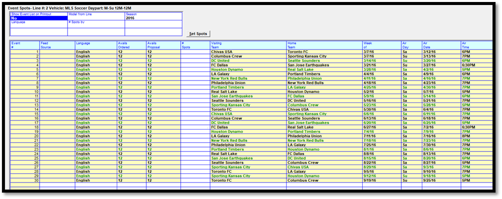
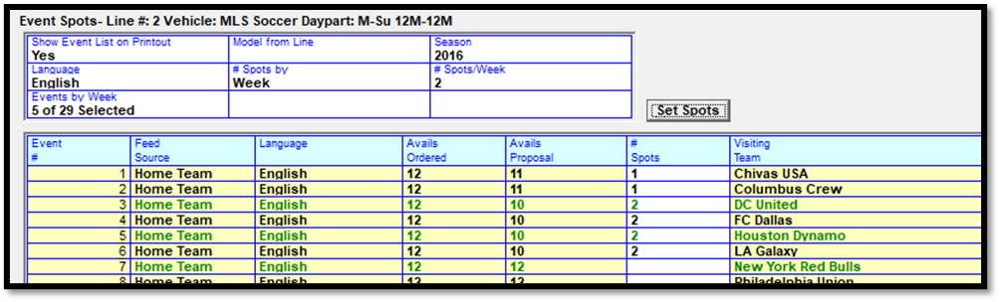
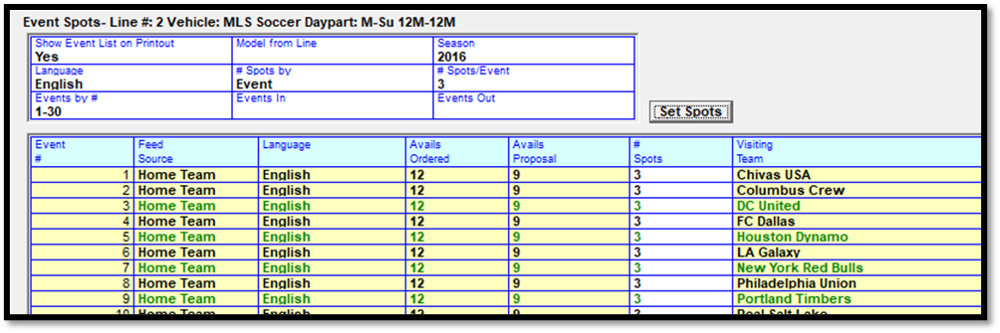

Sports Vehicle Lines
For Sports type vehicles, the flights area works differently than for non-sports vehicles, as sports vehicles are sold by event, while other vehicles are sold by date. When clicking in the weekly grid area for a sports vehicle line, the “Event Spots” screen appears (see picture below), which is the screen that is used to enter spot counts for the different events that are being ordered.

The Event Spots screen consists of a Header area (upper left corner), and an Event Grid (lower half).
Header Area
This section describes the different fields in the header area.
Show Event List on Printout: when set to Yes, the list of games/events will be shown on the Proposals/Contract report.
Model From Line: this is used to copy the event counts from a different contract line (from the same contract) by selecting the line then pressing Set Spots.
Season: different seasons can be selected from this dropdown. A single line can have spots in more than one season.
Language: the event language.
# Spots by Week or Event: the two choices are “week” or “event”. With the “week” option, you choose the number of spots that will air per week, and the system will automatically distribute those spots to the events in that week. With the “event” option, the number of spots per event gets set in the “# Spots/Event” field.
# Spots/Week or # Spots/Event: with the “week” option, this field is used to set the default spot count per week. With the “event” option, it’s used to set the default number of spots per week.
Events by Week: with the “week” option, this field is used to set the weeks that will air spots, with each event week shown. Click the week to add the value from the “# spots/week” field to the week. This number can also be manually changed to set a week to have a non-default spot per week count.
Events by #: with the “event” option, this field is used to enter the range of event numbers that will air spots.
Events In/Events Out: this is used to set a pattern of events that are on and off. For example, “events in” of 5, and “events off” of 1 would mean five events will have spots, then the next event will be skipped, then the pattern will repeat for the entire span of events in the “events by #” field.
Set Spots: this button sets the spot counts on the Event Grid based on what was entered in the header area.
Event Grid
This section describes the different fields in the event grid area, which lists all the events for the selected season.
Event #: each event in a season is given a unique identifier number, starting at 1, which is shown here.
Feed Source: from the event information on the Programming screen.
Language: from the event information on the Programming screen.
Avails Ordered: the amount of inventory available excluding the proposal/contract.
Avails Proposal: the amount of inventory left including the proposal/contract.
# Spots: this field shows the number of spots for this contract line for this event, either using the values set using the header and the “Set Spots” button, or that have been manually typed in.
Visiting Team/Home Team: the team names defined for the event.
Week of: the Monday day of the week the event is scheduled to take place.
Air Day: the Monday through Sunday day the event is scheduled to take place.
Air Date: the actual air date for the event.
Air Time: the scheduled air time.
Event spots can be entered on this screen in three ways: by Event, by Week, and manually.
Event Spots by Week
To enter event spots by week:
- Click in the header area.
- Select the season and language.
- Set “# Spots by” to “week”.
- Enter the per week spot count in the “# spots/week” field.
- In the “Events by Week” section, click in the weeks that will air to set the weekly spot count to the “# Spots/week” value. This number can be changed for any week.
- Press Set Spots to populate the event grid with the chosen spot counts.

Event Spots by Event
To enter event spots by event:
- Click in the header area.
- Select the season and language.
- Set “# Spots by” to “Event”.
- Enter the number of spots per week in the “# Spots/Event” field.
- Enter the range of event numbers to use in the “Events by #” field.
- Either press “Set Spots” now, or use the “Events In” and “Events Out” fields to set a pattern of events on and off and then press “Set Spots”.

Manual Event Entry
To enter events manually, or to alter the number of spots for an event, simply click in the “# Spots” field in the Event Grid and type in the number of spots for each event as needed.
Press Done on the Event Spots screen when finished, or Cancel to discard the changes.